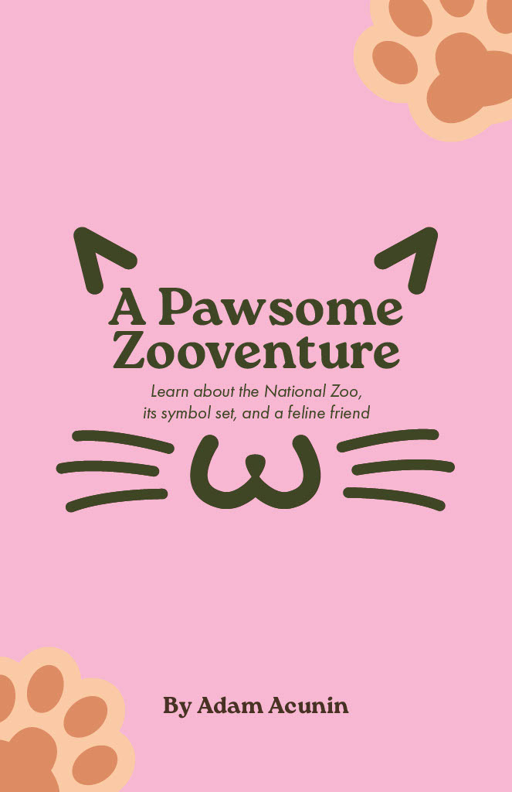
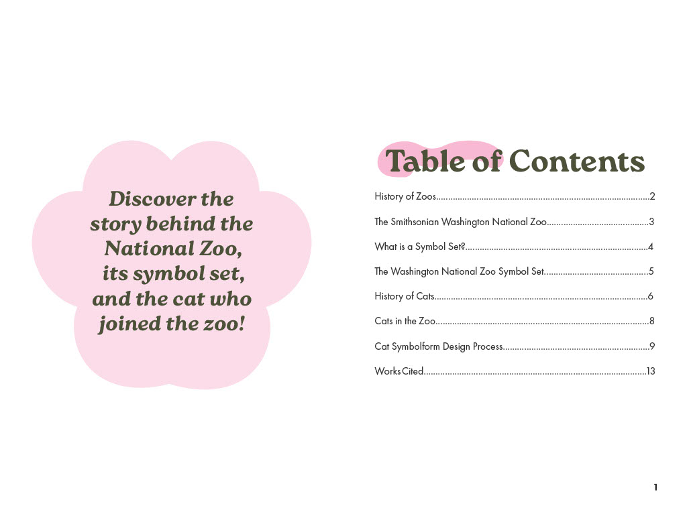
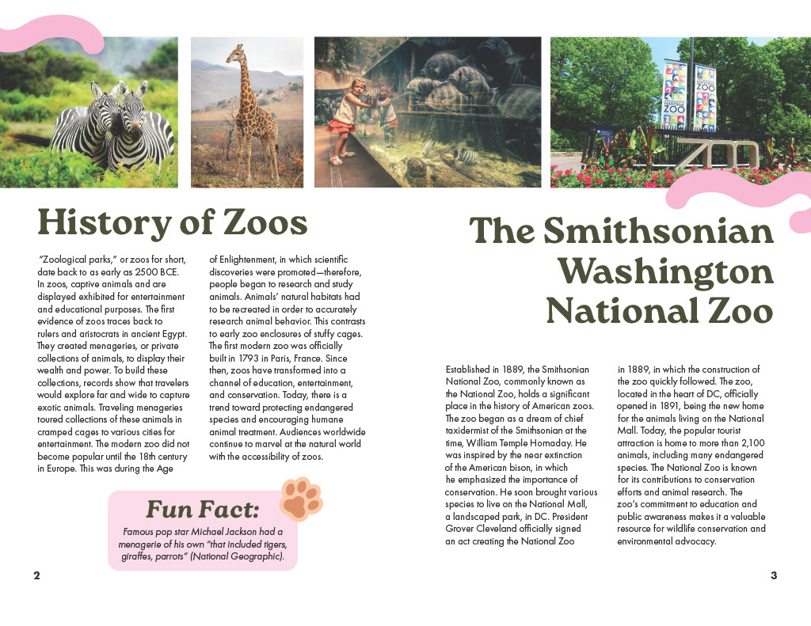
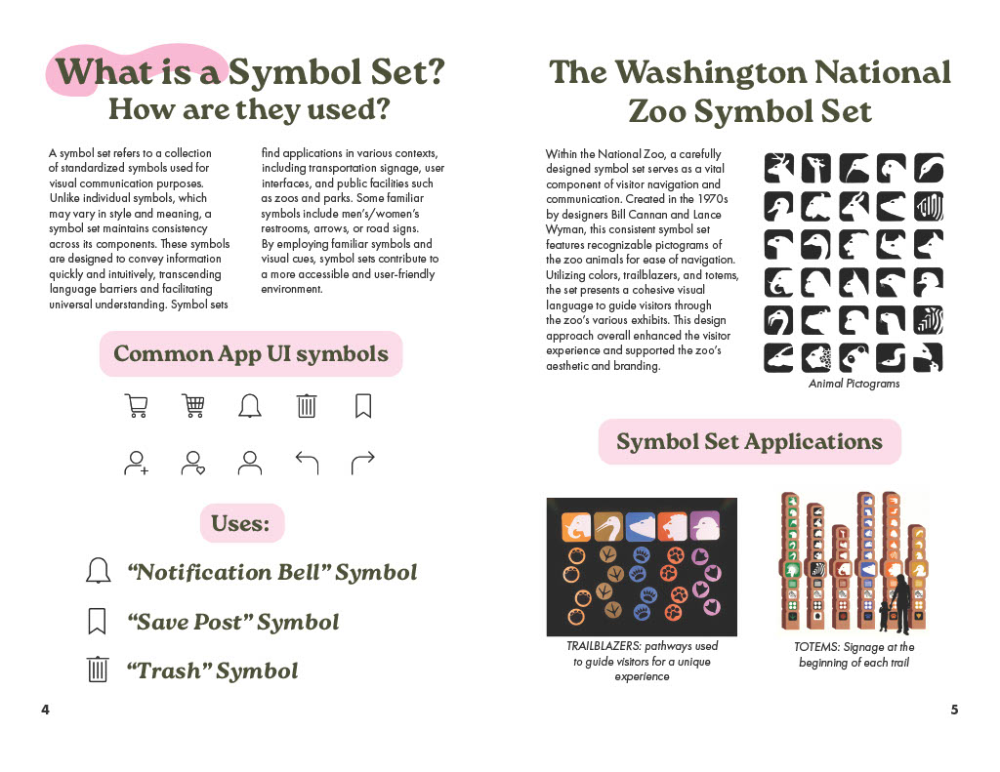
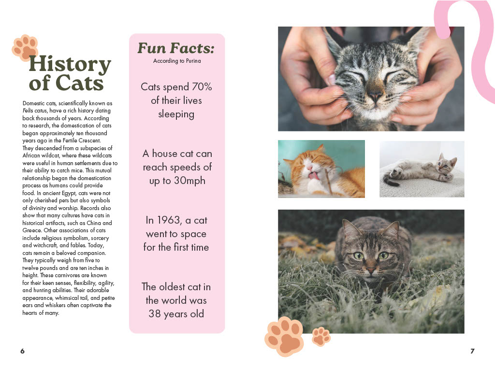
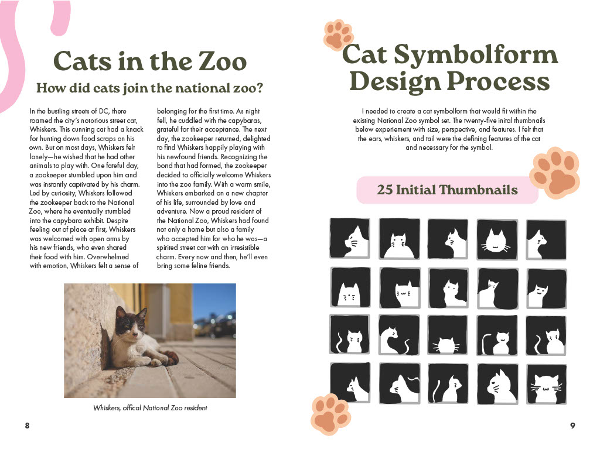
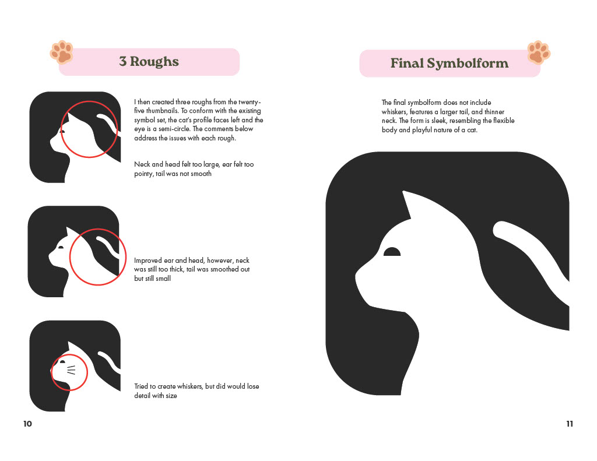
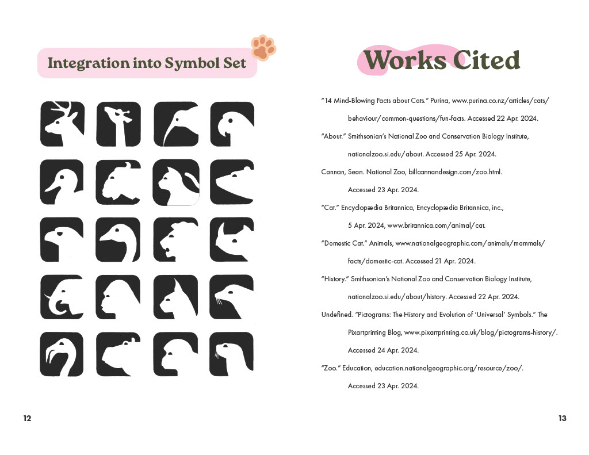
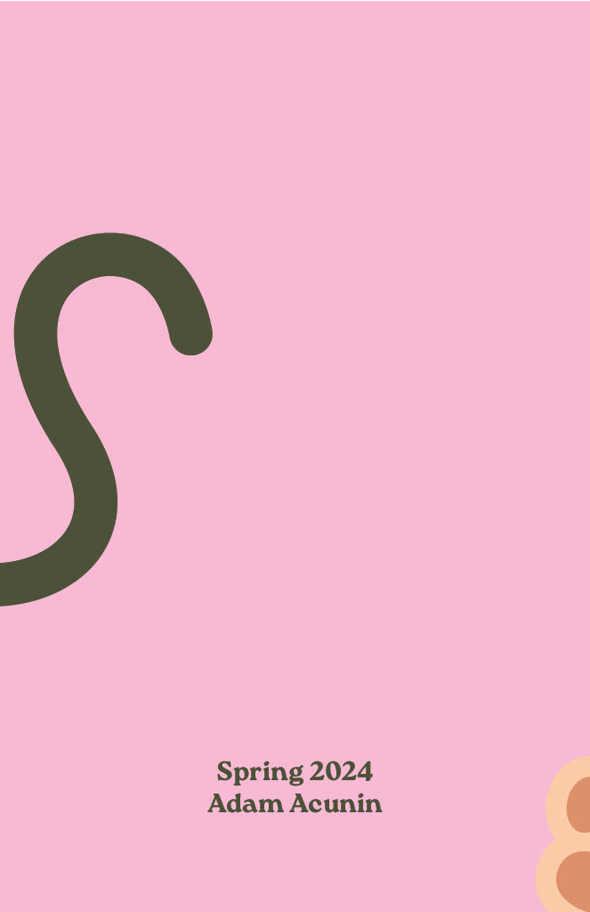

I created a multi-page process book in InDesign about my chosen animal, a cat.
It showcases my research on the Washington National Zoo history and its symbol set.
I documented my design process with thumbnails, roughs, and the final symbolform,
integrating it into the existing symbol set. The book used a grid structure, consistent colors,
and proper formatting for headlines, text, and captions.
Audience: Zoo Enthusiasts, Designers
Central Themes: Zoos, Symbol Sets
Goal: Create a cat symbol that will fit within the preexisting zoo symbol set








